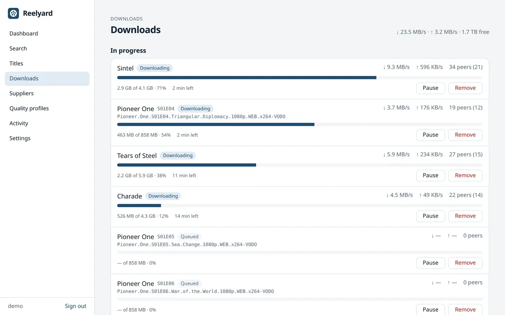
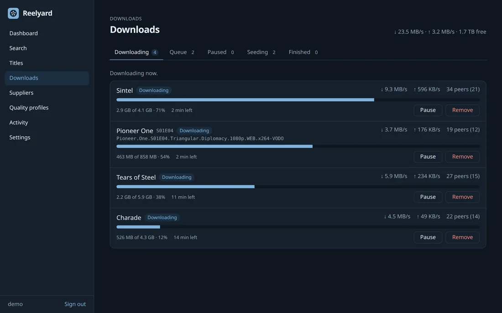
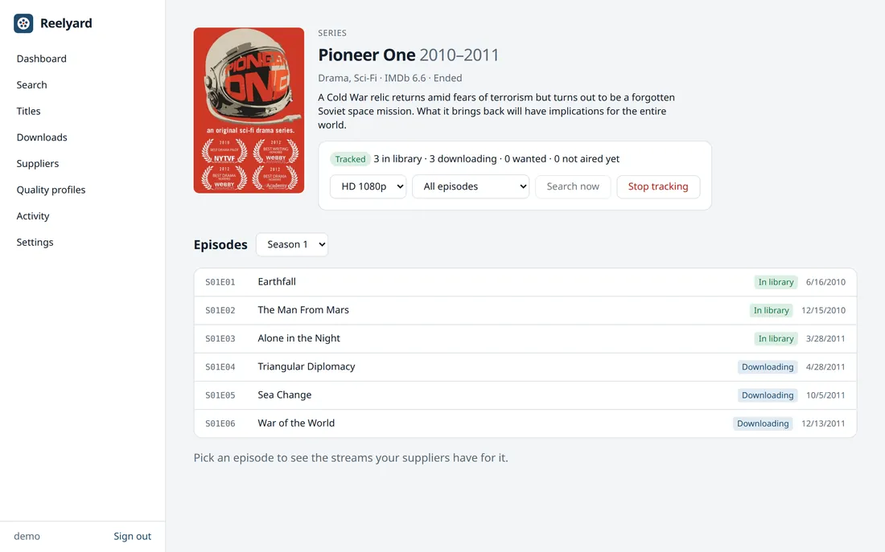
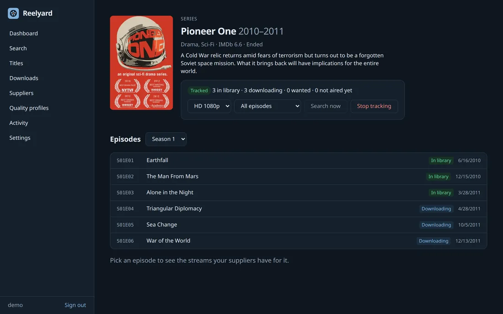
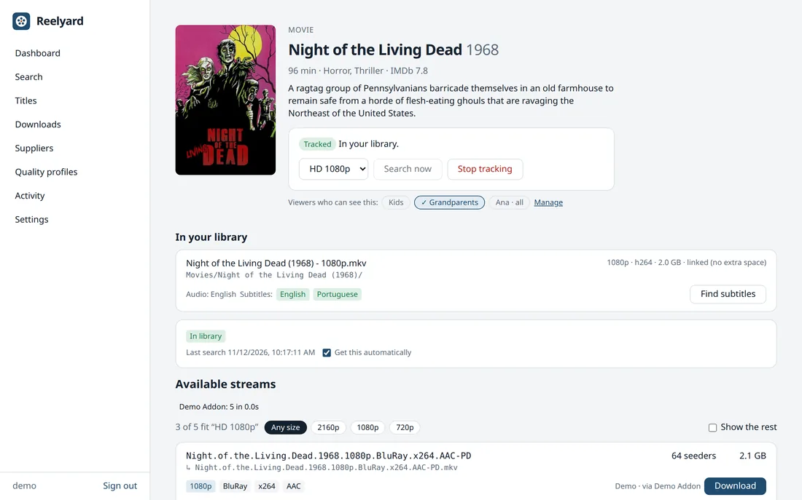
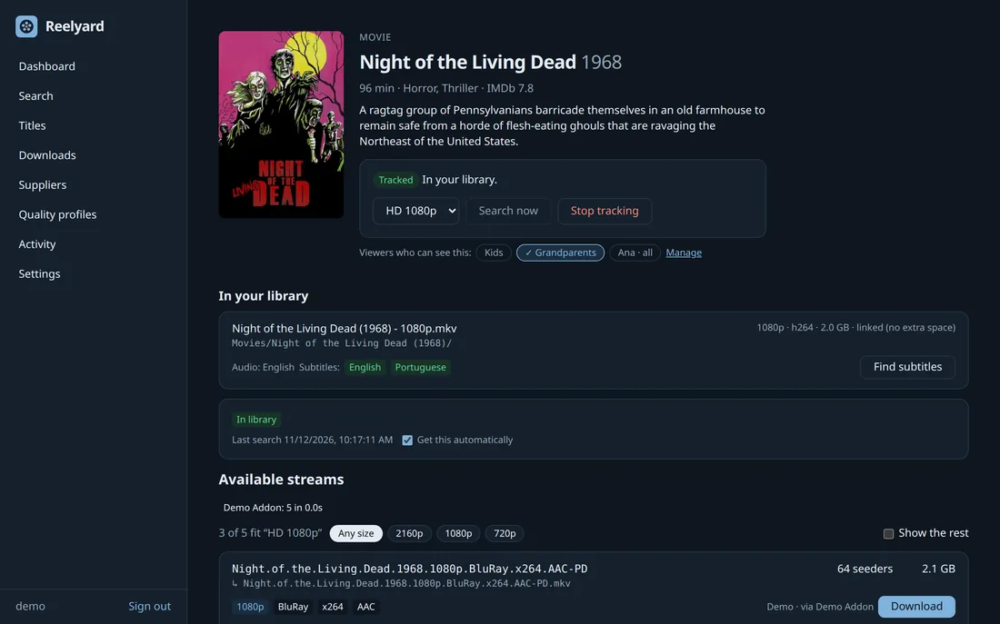
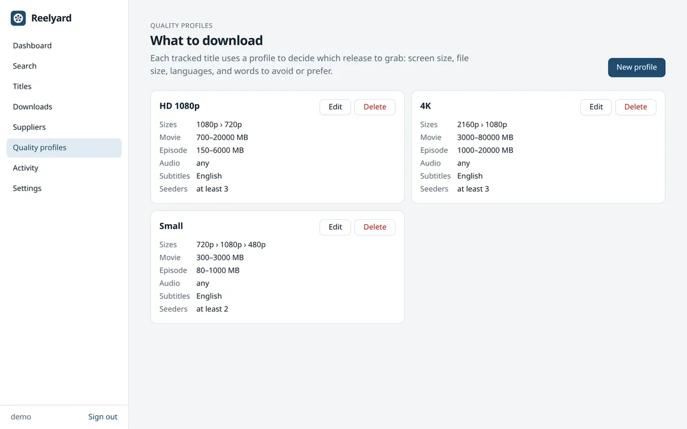
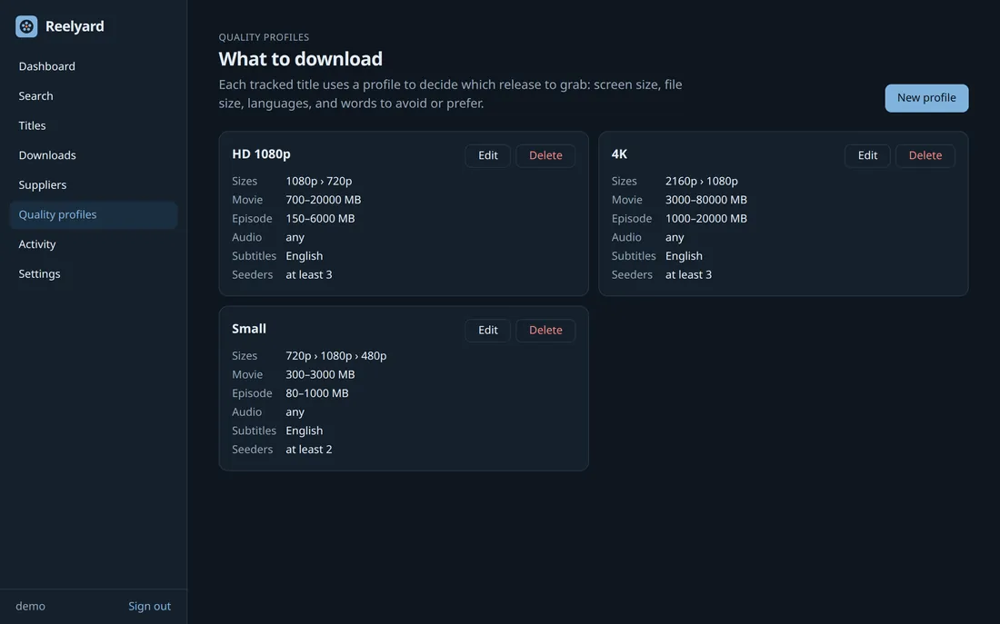

Your watchlist, downloaded and ready to play.
Reelyard tracks the movies and TV series you want, finds releases through Stremio addons, downloads them with its own torrent engine, and files them into a Jellyfin/Plex-ready library with subtitles. Then it streams them to your TV.
One binary · Linux, macOS, Windows · Docker & NAS · Raspberry Pi 4/5

How it works
Press Track once. Reelyard does the rest, and keeps doing it as new episodes air.
Track
Pick a movie or series and a quality profile: resolution, size, audio and subtitle languages.
Find
Reelyard asks your suppliers (Stremio addons) for releases and picks the best one that fits.
Download
The built-in torrent engine fetches it, shares fairly, then cleans up. No separate client.
Watch
Files land in your library with proper names and subtitles, ready for your TV, Jellyfin, Emby or Plex.
A look inside
The web UI runs on your own machine, at port 8787, and you open it in any browser.












Shown with public-domain and Creative Commons titles.
Everything in one place
No stack of separate apps to wire together. Reelyard is the tracker, the downloader, the library manager and the media server.
Stremio addons as suppliers
Paste any addon's manifest address, or browse the catalog. Torrent addons give releases, subtitle addons give subtitles.
Quality profiles
Allowed resolutions, size limits, required audio language, words to avoid or prefer, minimum seeders. Every release shows why it fits or not.
Built-in torrent engine
Best-seeded downloads go first, dead ones are swapped for another release, sharing stops at a ratio or time limit, and disk space is checked before anything starts.
DLNA server for your TV
TVs, consoles and VLC find Reelyard on your network and play with seeking, subtitles and resume points. Each family member can get their own server, limited to the titles you choose.
Jellyfin, Emby & Plex ready
Jellyfin/Plex naming, subtitles next to the video, hardlinks instead of copies, and an automatic rescan when new files arrive.
VPN binding
Bind every torrent connection to your VPN interface. If the VPN drops, torrents pause instead of leaking onto your normal connection.
Apps for TVs and phones
Pair devices with a short code. Continue watching, next episode and recently added, through a documented API.
Scriptable API
Everything the web UI does goes through /api/v1. Create API keys for scripts and home automation.
Runs anywhere, quietly
A single Go binary with an embedded web UI and SQLite. Installs as a system service on Linux, macOS and Windows.
Install in a minute
Install, open http://localhost:8787, and the first visit creates your account and walks you through folders and suppliers.
- Linux
.deb/.rpmwith a systemd service - macOS through Homebrew, Windows as a service
- Docker image for any NAS: ZimaOS, Unraid, TrueNAS, Synology, QNAP, OpenMediaVault
- Ready-to-flash Raspberry Pi 4 and Pi 5 images
- amd64 and arm64 everywhere
docker run -d --name reelyard --network host --restart unless-stopped \
-e PUID=1000 -e PGID=1000 \
-v reelyard-config:/config -v /srv/media:/data \
ghcr.io/reelyard/server:latestOn a NAS? See the NAS guides.
sudo apt install ./reelyard_*_amd64.deb ffmpeg
# or: sudo dnf install ./reelyard-*.x86_64.rpm ffmpegDownload the package from the releases page. It starts the reelyard service for you.
brew install --cask reelyard/tap/reelyard
reelyard install --user && reelyard start --userStarts now and at every login.
reelyard.exe install
reelyard.exe startDownload the windows zip, then run these from an administrator terminal (or just double-click reelyard.exe to try it).
Flash reelyard-pi4.img.xz or reelyard-pi5.img.xz with Raspberry Pi Imager, plug in a network cable, then open http://reelyard.local:8787.
Reelyard does not condone piracy. Reelyard is software you run on your own machine. We do not host, store, index, link to or distribute any movies, series or other media, legal or illegal, and our website, app stores and services contain none. Reelyard ships with no content sources: what it finds comes only from the addons you add yourself.
You are responsible for what you download and share with it, and for following the copyright laws where you live. Only download content you have the rights to, such as public-domain films like Night of the Living Dead (1968). Read the full notice →